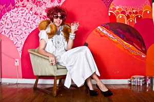

|
étrange folie
Guest curator Eric Schmalenberger has put together a series of shows ranging from bushwick drag extravaganzas, gender bending cabaret, underground cinema, and internet celebutards.
September 16th
An evening with Sam Jones and Fritz Donnelly. A night of internet shorts and special guests presented by myself and two bourgeoning internet celebs of note in the down town scene.
Tickets: $15
|
 |
|
September 17th
An evening of uncanny cinema, featuring surreal short films and macabre video art with Sean Gill. Sean Gill, who has been described by Papermag as “an imaginative, experienced playwright/filmmaker [with] apocalyptic vision," has studied with Werner Herzog and Juan Luis Buñuel, followed public defenders for the National Geographic Channel, and has screened his work at the Canadian Film Centre, the LES Film Festival, the Coney Island Film Festival, the Academy Award-qualifying Atlanta Film Festival, Bideodromo Bilbao, and dozens of other festivals and venues.
Tickets: $10
September 18th
"The Grapes of Bath: BathSalts Does Manhattan" Called “unforgettable” and a place where “glamour, anarchy, and subversion reign” by the New York Times, Bushwick’s infamous drag show makes its first trip across the river to Manhattan with some of queer Brooklyn's finest and most talented performers. Hosted by Macy Rodman and Severley Mame.
Macy Rodman is an underground drag performer and recording artist. She has been at the helm of "BathSalts: A Drag Show For F@&%ups" since 2012, and continues to spread queer Brooklyn depravity across our great nation. Severely Mame, New York City's favorite dead girl, called 'buxom and polished' by OUT Magazine is a drag queen, performance artist and burlesque dancer bringing a little terror and beauty to audiences in New York and beyond! Line up TBA
Tickets $10
September 19th
Miriam: The Morning After (Pill)
After a night of debauchery, Miriam, NYC's favorite gender-subverting songstress, performs a new cabaret show. But will she be too hungover to sing? Will she remember what happened when she blacked out? Will she get the the morning after pill in time?
Written and conceived by Michael Newman, Eric Schmalenberger, and Maria Dessena
Tickets: $10 Advance $15 at the door
September 20th
The Delicate Cloud Peoples Revolutionary Assembly
the delicate cloud people, who are mostly workers in Johan Johansanson’s Mosoleoum Factory have had it up to here with their working conditions and have decided to hold a benefit to raise funds so they may unionize and/or foment a revolution.
cloud people tend to be exploited because most of them were raised by alcoholics and they have a difficult time saying no, even when their working conditions are clearly disgusting.
They have put together an evening of performances in order to encourage each other to stand up to Johan Johansanson.
performances by….
Michael Cavadias
Amy Miles
Cole Escola
Eric Schmalenberger
Joseph Keckler
Sam Kogon
Finnegan Shanahan
Tickets: $10 advance and $15 at the door
|
| Eric Schmalenberger is a Brooklyn based producer, performer, curator, and nightlife personality. Working in a variety of different media with various ensembles, spaces, and artists, Mr. Schmalenberger's community driven work and collaborations have included groups such as Rachel Klein Productions, The Citizens Band, assume vivid astro focus, The Voluptuous Horror of Karen Black, The House of Yes, and Vanessa Walters Man Dancers. Eric a producer of the infamous BANZAI parties at the Red Lotus Room where he and his co-producer Muffinhead annually put together the work of over 100 performers, visual artists, video artists, installation artists, and club personalities into a single extravagant event. He is also the producer of his solo effort BLUNDERLAND, an evening of surreal cabaret and performance art. Other favorite projects include producing Claywoman, a lecture series given by a 500 million year old being from another galaxy. Performances in Spiderman: Turn of the Lights, Circus of Circus, and The Christmas Spectacular at The House of Yes, Rachel Klien’s productions of Symphony of Shadows and Maria Macabre, producing a series of live performances for famed art collective assume vivid astro focus at their exhibit absolutely venomous accurately fallacious (naturally delicious), his recent solo cabaret show MIRIAM, I am a LADY? , and last years Bushwick horror spectacular THE DEAD DREAM MACHINE. |